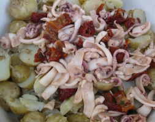

Du cônet et des patates
Eune èrchette

l's îngrédgeins:
- du cônet
- d'l'âl
- des patates Rouoyales
- des tonmates s'tchies au solé
- dé l'hielle d'olive
- du vinnaigre dé vîn
- du thymbe limonné
I' faut netti l'cônet épis l'tranchi. Hadgiz l'âl et mêlez-lé auve l'hielle et l'vinnaigre pouor faithe eune sauce. Laîssiz l'cônet à tremper dans la sauce et ajouôtez les tonmates hadgies et l'thymbe.
Bouoilliz les patates, et laîssiz-les r'fraidgi un brîn. Épis tranchiz les patates et m'ttez-les dans eune bolle.
Fricachiz l'cônet dans sa sauce épis vèrsez l'mêlange sus les patates.
Viyiz étout: